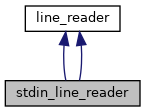

Inheritance diagram for stdin_line_reader:

Collaboration diagram for stdin_line_reader:

Public Member Functions | |
| stdin_line_reader (asio::any_io_executor ex) | |
| stdin_line_reader (asio::any_io_executor ex) | |
 Public Member Functions inherited from line_reader Public Member Functions inherited from line_reader | |
| template<typename CompletionToken > | |
| auto | async_read_line (std::string prompt, CompletionToken &&token) -> decltype(asio::async_initiate< CompletionToken, void(std::error_code, std::string)>(initiate_read_line(), token, this, prompt)) |
| template<typename CompletionToken > | |
| auto | async_read_line (std::string prompt, CompletionToken &&token) |
The documentation for this class was generated from the following files:
- 3rd_party_lib/asio/asio/src/examples/cpp11/type_erasure/stdin_line_reader.hpp
- 3rd_party_lib/asio/asio/src/examples/cpp11/type_erasure/stdin_line_reader.cpp